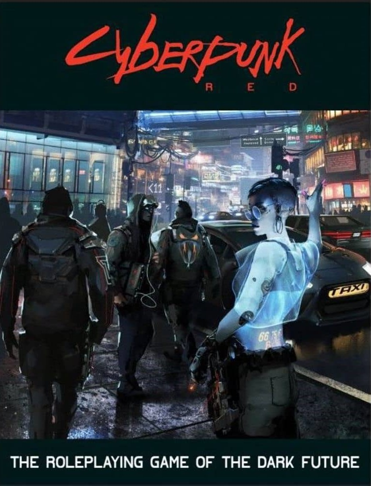

Uma Experiência de Imaginação e Aventuras
RPG de mesa é um jogo de interpretação onde os participantes assumem papéis em narrativas
colaborativas.
Usando dados, fichas e criatividade, exploram mundos fantásticos, resolvem desafios e constroem
histórias.
Sistemas de RPG Famosos
Conheça três sistemas populares:

- Cyberpunk RED
- Futurista, distópico e tecnológico.
- Rebeldia contra corporações.

- Dungeons & Dragons
- Fantasia medieval com magia.
- Sistema mais clássico.

- Call of Cthulhu
- Terror cósmico e investigação.
- Suspense e insanidade.
Como jogar RPG
Para jogar RPG, você vai precisar de um sistema, cada um possuem livros específicos e fichas
específicas
Aqui em baixo você encontra diversos tipos de ferramentas para jogar e tutoriais para te guiar em
sua jogatina,
incluindo mapas virtuais para ficar mais divertido!
- Sites para jogar RPG com Mapas
- Owlbear Rodeo
- Roll 20
- Playlist de vídeos Dungeons & Dragons
- Mestre Taverneiro
- Formação Fireball

- Fichas para RPG
- Modelo de Ficha no Excel
- Modelo de Ficha Tradicional PDF

Gerador de Dados
Use nosso gerador de dados virtual para suas campanhas!